发信人: hemind(TD), 信区: outdoor
标 题: 双桥沟攀冰的几天 #15P
发信站: 饮水思源 (2017年02月21日15:33:41 星期二)
前段时间去双桥沟爬了五天，还是记录一下吧！
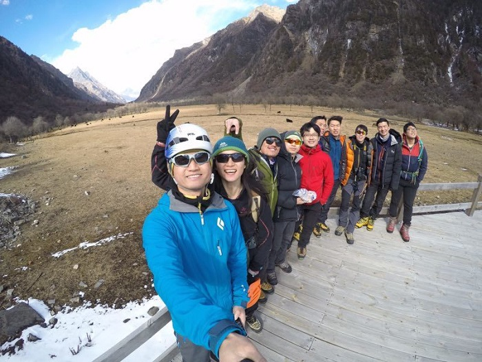 screen.width - 200){this.width = screen.width - 200}">
第一天，木梯子刷线10趟，爬了悬挂的冰柱子
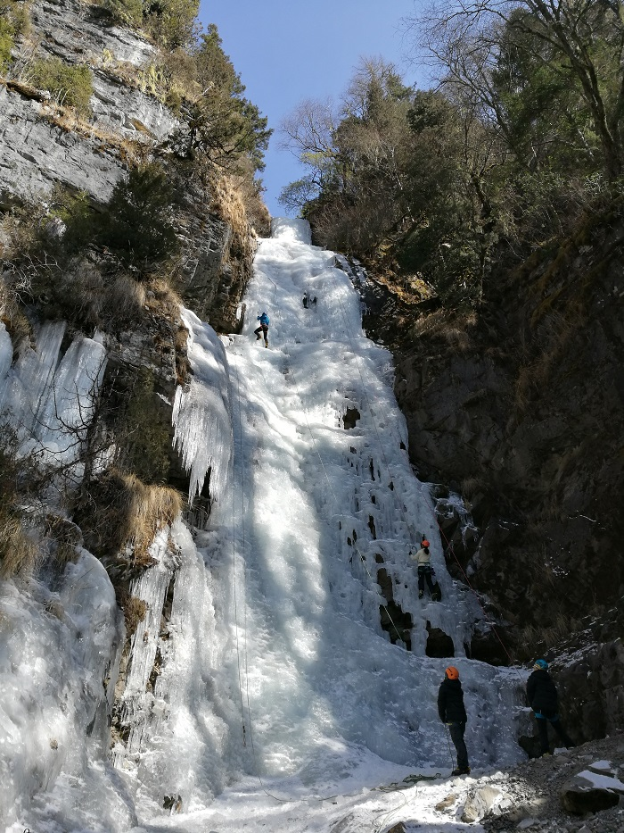 screen.width - 200){this.width = screen.width - 200}">
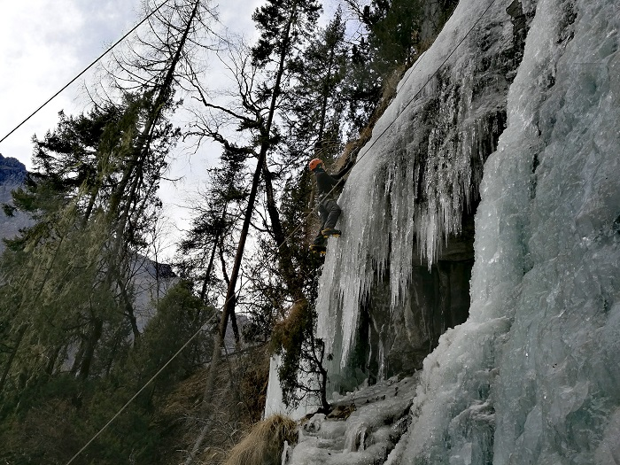 screen.width - 200){this.width = screen.width - 200}">
第二天白岩沟继续刷，只爬了5趟，另外顶绳爬了干攀
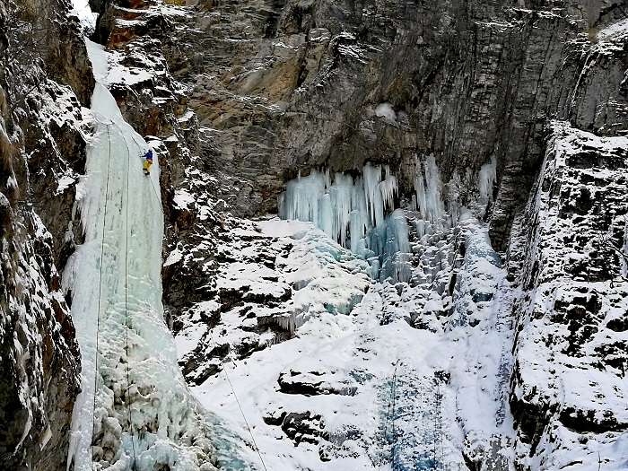 screen.width - 200){this.width = screen.width - 200}">
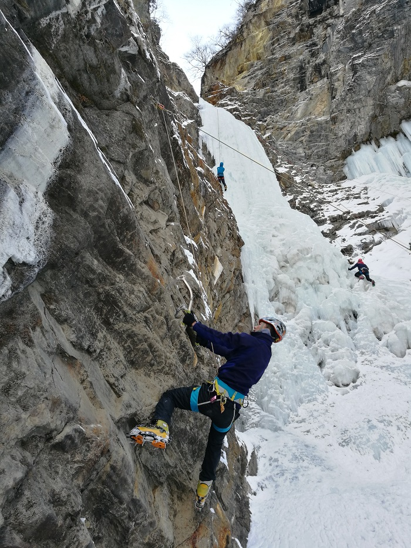 screen.width - 200){this.width = screen.width - 200}">
第三天，龙壁打酱油，队友先锋冲坠，还好有惊无险，遇到落石，还好都没砸到，遭遇这
些后吴老师果断提出赶紧撤，旁边的小冰壁也不爬了，的确，当天风险太高，我们运气太
好
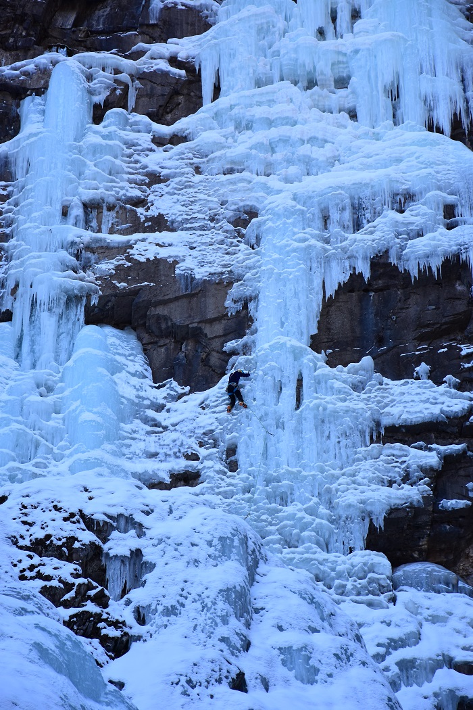 screen.width - 200){this.width = screen.width - 200}">
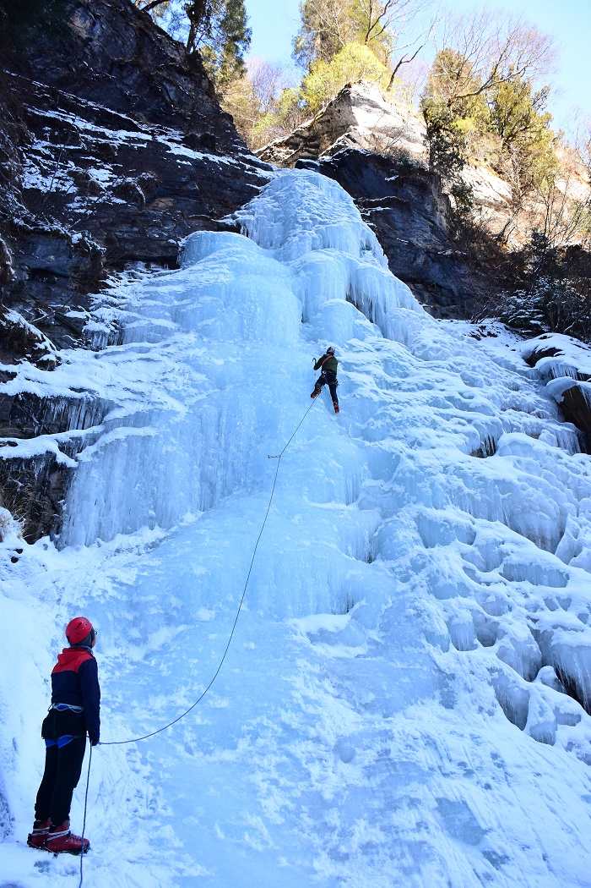 screen.width - 200){this.width = screen.width - 200}">
第四天，愉快的多段
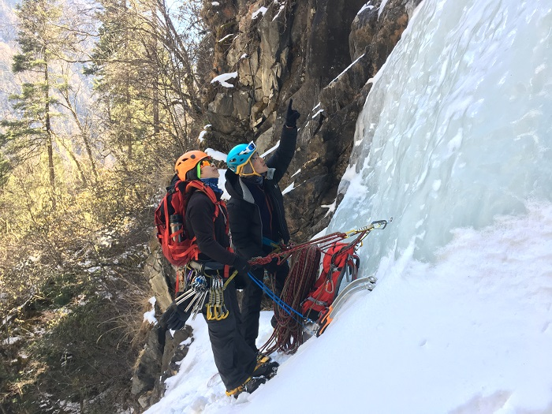 screen.width - 200){this.width = screen.width - 200}">
第五天，先锋了翅膀，但是爬了很久很久，中间一段没什么地方可以打锥，爬一步就要休
息好久，脚法还很差，踢冰经常要好几下
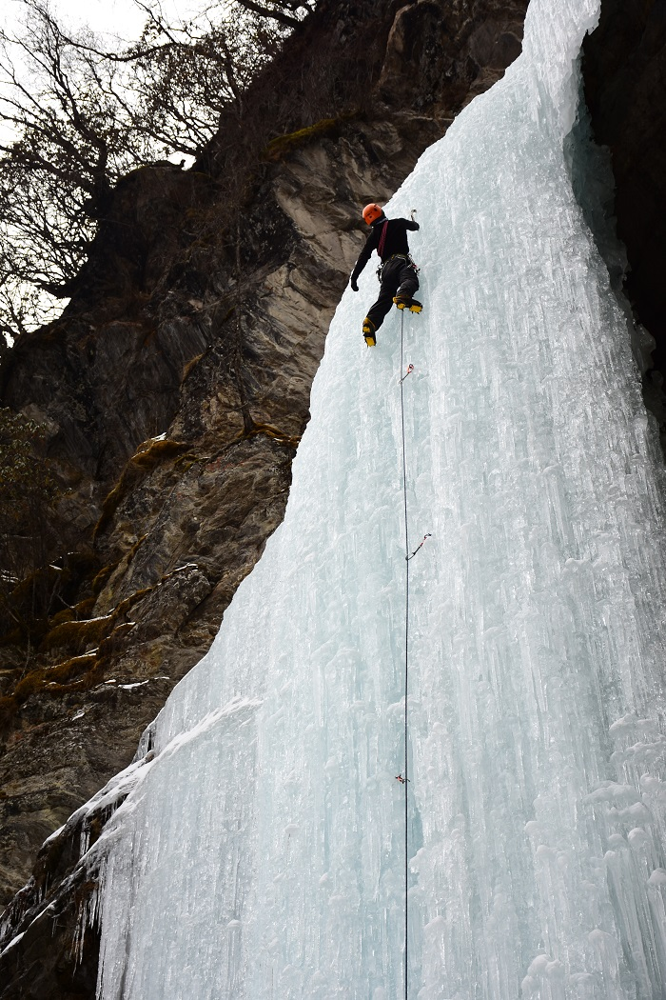 screen.width - 200){this.width = screen.width - 200}">
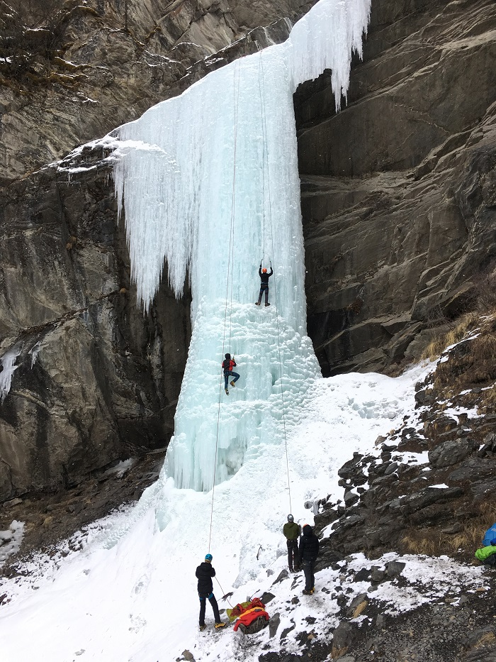 screen.width - 200){this.width = screen.width - 200}">
其他各种爬，据说挂在冰壁上能拍出不错的照片，下次试试
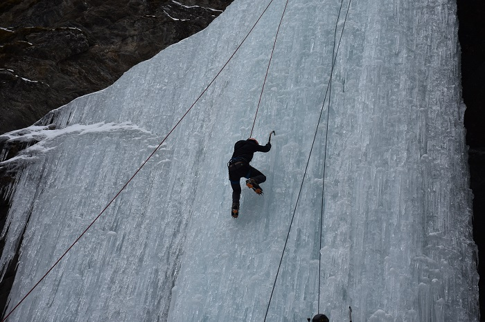 screen.width - 200){this.width = screen.width - 200}">
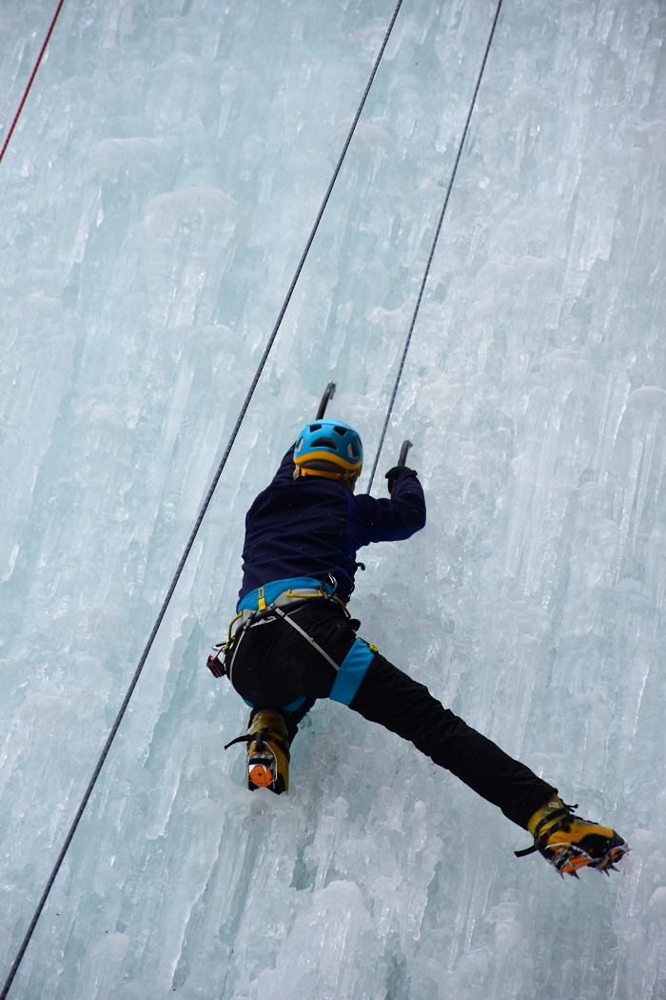 screen.width - 200){this.width = screen.width - 200}">
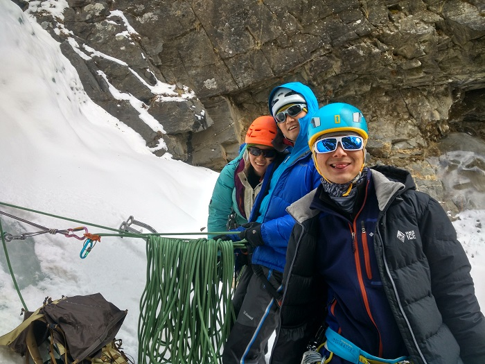 screen.width - 200){this.width = screen.width - 200}">
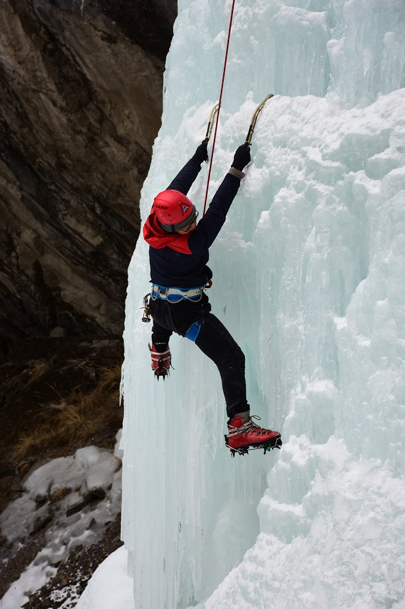 screen.width - 200){this.width = screen.width - 200}">
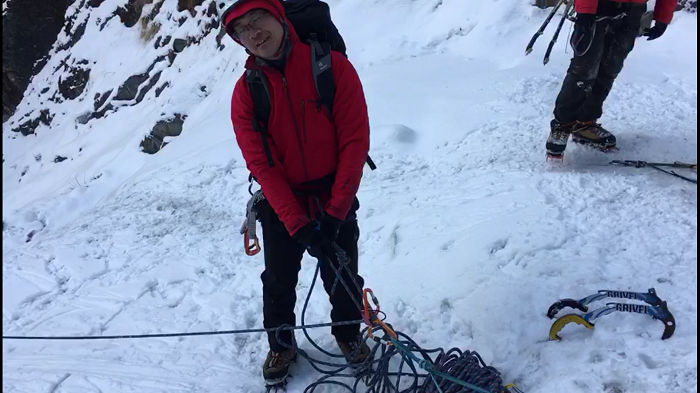 screen.width - 200){this.width = screen.width - 200}">
下个冰季继续，加油！
Posted by BBSPicUploader v3.1.0.5 2017/2/21 7:33:38
--
Work hard, Climb harder.
※ 来源:·饮水思源 bbs.sjtu.edu.cn·[FROM: 10.187.15.231]
※ 修改:·hemind 于 2017年02月26日17:40:48 修改本文·[FROM: 10.187.27.227]
|